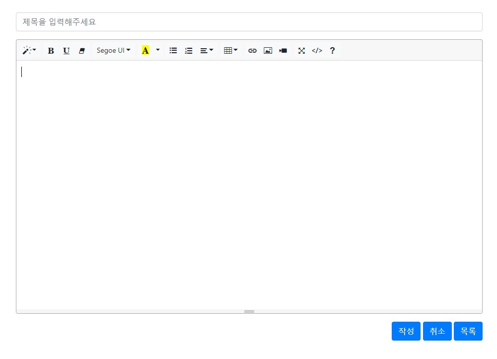
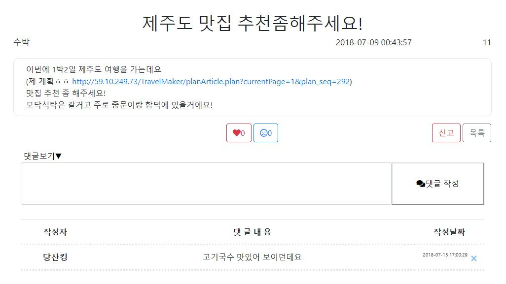
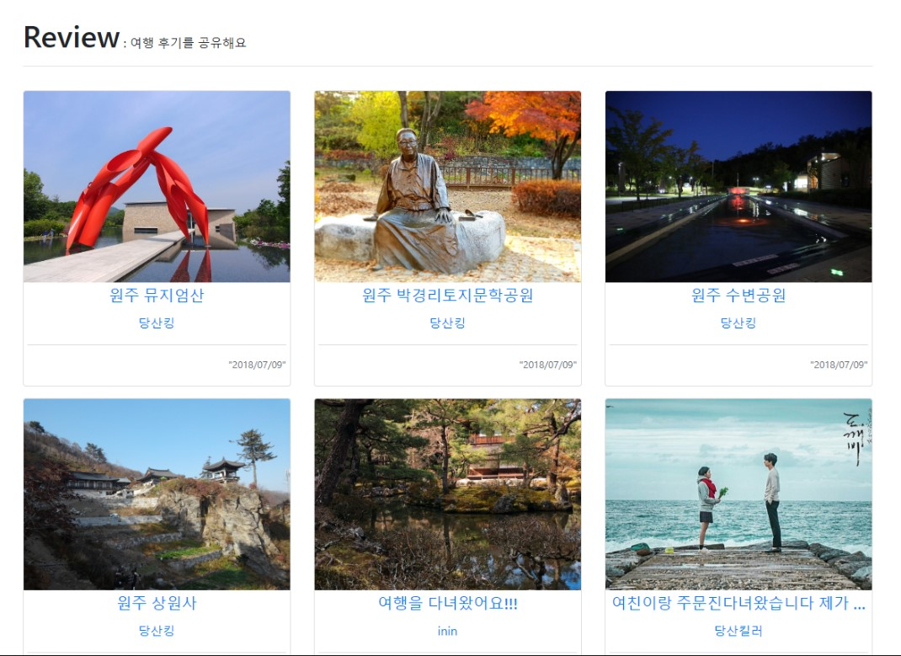
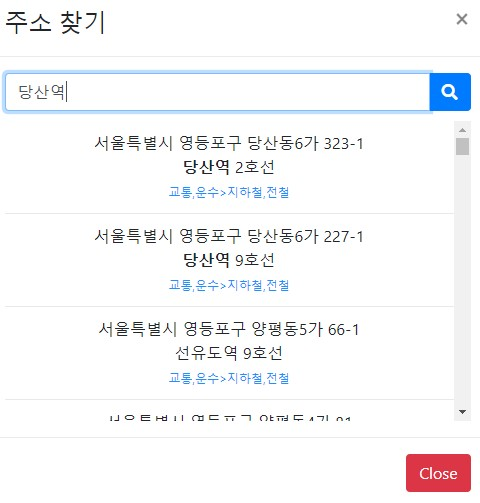
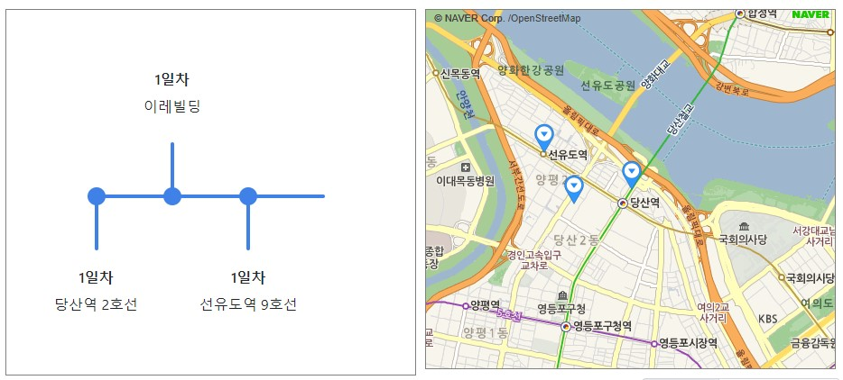

TravelMaker
프로젝트 이름 : TravelMaker
프로젝트 기간 : 2018-06-22 ~ 2018-07-09
사용 기술 : HTML5, CSS3, JavaScript, jQuery, Bootstrap, Java, JSP&Servlet, Oracle
버전 관리 : GitKraken, GitHub / WAS : Apache Tomcat
개발 목표 : 여행자들을 위한 여행 계획 및 여행 후기 공유 사이트 구축


글쓰기 / 글수정 / 글삭제
글쓰기는 위지윅에디터인 summernote를 사용했다. 글 작성자는 글 수정이나 글 삭제를 할 수 있다.


댓글 / 신고 / 썸네일 이미지
댓글은 회원가입을 한 사람이 달 수 있다. 댓글로 인한 스크립트 공격을 막기 위해 필터를 적용하였다. 신고는 한 사용자가 한 게시물당 한번만 가능하다. 썸네일 이미지는 게시글의 첫 번째 이미지가 사용되도록 구성했다.


지역 검색 및 지도 표시
여행계획 작성을 위한 검색 및 지도이다. 글 작성자는 자기가 방문하고자 하는 지역을 선택한다. 검색으로 선택한 지역은 일정과 지도에 표시된다. 네이버 검색 API와 지도 API를 사용하였다.
후기
프로젝트 초반에 역할 분담을 명확히 하지 않고 의사소통이 부족하여 중복된 기능을 가진 페이지를 만들고는 했는데, 중반부터 의사소통을 제대로 하여 각자 맡은 업무를 하였고, 그 결과 무사히 프로젝트를 완성할 수 있었다. 이 프로젝트로 인해 의사소통의 중요성을 깨닫게 되었다. 팀원들과 대화하며 사이트를 만든 경험은 즐거웠다.